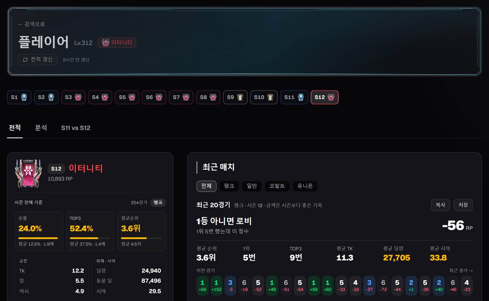
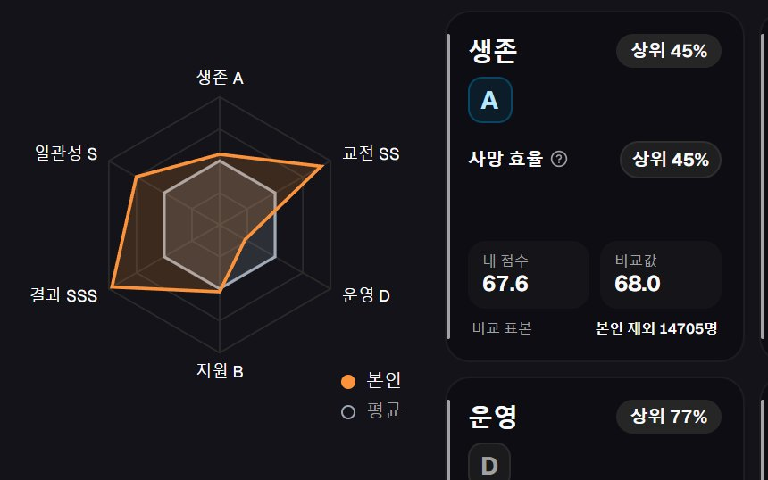

이터널 리턴은 3명이 한 팀이 되어, 한 경기에 최대 24명이 겨루는 온라인 게임입니다. ERCraft에서 닉네임을 검색하면 게임사 공식 API에서 경기 기록을 받아, 그 플레이어의 전적과 플레이 분석을 보여 줍니다.

전적 · 닉네임을 검색하면 나오는 화면. 시즌 성적과 최근 20경기 요약, 경기 목록을 보여 줍니다.

분석 · 비슷한 등급의 사용자와 비교한 플레이 등급조합 가이드 · 순위가 걸린 경기 약 11만 7천 판을 집계한 3인 팀 성적캐릭터 순위표 · 지난 7일 경기 성적으로 매긴 순위
화면 속 플레이어 닉네임과 순위는 가렸습니다.
만든 기능
전적 검색닉네임으로 시즌 전적과 최근 경기를 봅니다. 공식 API는 요청 한도가 있어서, 사용자가 누른 검색을 뒤에서 도는 수집 작업보다 먼저 처리합니다.
플레이 분석얼마나 오래 살아남는지, 싸움에서 얼마나 기여하는지 같은 여섯 항목을 비슷한 등급의 사용자와 비교해 등급으로 보여 줍니다.
AI 분석과 챗봇LLM이 전적을 읽고 코칭 글을 씁니다. 글 속 숫자는 원본 데이터와 대조한 뒤에 보여 줍니다. 챗봇은 질문에 맞는 전적을 조회해서 답합니다.
조합 가이드, 순위표어떤 캐릭터 3명이 팀을 이루면 성적이 좋은지, 요즘 어떤 캐릭터의 성적이 좋은지 실제 경기 기록을 집계해 보여 줍니다.
미니게임게임 상대를 찾는 대기 시간 동안 할 수 있는 체스, 오목, 카드 게임을 넣었습니다.
문제를 찾아 고친 일
ERCraft를 운영하며 겪은 일 가운데 세 가지입니다.
"팀원 기록이 없다"는 문의에서 저장이 덜 된 경기를 찾아 고쳤습니다
2026년 10월 · 사용자 문의 대응 · TypeScript, Prisma, MySQL
문제
팀원 기록에 "공식 기록 없음"이 뜬다는 문의를 받았습니다. 확인해 보니 24명이 있어야 할 경기에 3명만 저장돼 있었습니다.
원인
경기가 끝나기 전에 받아 둔 기록이 완성된 기록으로 저장돼 있었습니다.
한 일
끝난 경기도 24명보다 적을 수 있어서, 완성 여부는 참가자 수가 아니라 1등 기록이 있는지로 판단하게 했습니다. 끝난 지 24시간이 안 된 미완성 경기는 다시 받습니다. 첫 수정 뒤에도 오래된 미완성 경기가 남아 있는 것을 확인하고, 40분 뒤에 한 번 더 고쳐 이미 저장된 경기도 다시 확인하게 했습니다.
결과
배포한 뒤 문의한 사용자의 경기 6개가 복구된 것을 확인했습니다. 원본을 다시 받을 수 없는 오래된 경기는 "기록 부족"으로 따로 표시합니다.
첫 검색이 느린 원인을 단계별로 재서 찾았습니다
2026년 10월 · TypeScript, Node.js, Fastify, 공식 게임 API
문제
저장된 기록이 오래된 플레이어 한 명을 검색해 재 보니, 첫 화면이 뜨기까지 5.3초가 걸렸습니다.
원인
운영자용 진단 화면에서 단계별 시간을 보니, 저장된 기록이 이 플레이어의 것인지 확인하는 단계 하나가 4초였습니다. 공식 경기 목록을 매번 첫 페이지부터 읽고 있었습니다.
한 일
확인하는 방법은 바꾸지 않고, 경기 목록을 읽기 시작하는 위치만 저장된 최신 경기 다음으로 옮겼습니다. 거기서 못 찾으면 첫 페이지부터 다시 읽습니다.
결과
같은 플레이어로 다시 재니 1.75초로 줄었습니다.
AI가 쓴 분석 문장의 숫자를 원본 데이터와 대조합니다
2026년 9월 · TypeScript, LLM API
문제
LLM은 승률이나 순위가 틀려도 자연스러운 문장을 씁니다. 전적 사이트에서 숫자가 틀리면 분석 전체를 믿을 수 없게 됩니다.
한 일
분석 글을 항목별로 나눠 쓰게 하고, 항목마다 근거로 쓴 데이터를 붙이게 했습니다. 검사기가 문장 속 숫자를 근거 값과 비교해, 다르면 그 항목만 다시 쓰게 합니다. 다시 써도 틀리면 화면에 내보내지 않습니다.
고친 점
처음에는 한 곳만 틀려도 글 전체를 다시 쓰게 했더니 맞던 항목까지 바뀌었습니다. 틀린 항목만 고치게 바꾸고, 고칠 때 근거 데이터는 바꾸지 못하게 막았습니다.
운영하면서 한 일
삭제 요청 대응"내 전적을 지워 달라"는 요청을 받고, 다음 날 검색·프로필·API·AI 분석에서 그 계정이 보이지 않게 하는 기능을 배포했습니다.
게임사에 문의경기 데이터 파일을 분석에 써도 되는지 게임 개발사에 문의해 허락을 받았습니다. 조건에 맞춰 원본 파일은 분석 뒤 지우고, 비공식 사이트라는 표시를 두었습니다.
DB 관리1분마다 도는 작업이 테이블 전체를 읽고 있어서 인덱스를 추가했습니다. 가장 큰 테이블은 서비스를 내리지 않고 압축해 38.95GB에서 16.3GB로 줄였습니다.
게임 업데이트 알림게임 데이터가 바뀌면 디스코드로 알림이 오게 해 두었습니다. 업데이트가 나오면 사이트 데이터를 언제 다시 만들지 바로 정할 수 있습니다.
공지와 개발일지기능을 바꾸면 사이트 공지에 달라진 점을 올리고, 개발일지에 무엇을 왜 고쳤는지 남깁니다.
ERCraft 구조
Windows 서버 한 대로 운영합니다. 화면은 Cloudflare Pages에 올리고, 데이터 요청만 Tunnel을 거쳐 서버로 받습니다.
ERCraft를 만들면서 공식 API에서 여러 번 막혔습니다. 요청 한도, 한도를 넘었을 때의 재시도, 정상 응답 안에 들어 있는 오류 코드, 버전마다 바뀌는 항목 이름 같은 것들입니다. 이 부분을 처리한 코드를 떼어 내, 같은 API를 쓰는 다른 개발자도 쓸 수 있게 공개했습니다.
ERCraft는 비공개 저장소라서, 공개된 코드는 이 저장소에서 볼 수 있습니다.
들어 있는 것
요청 관리요청 속도 제한, 한도 초과 시 재시도, 응답 캐시
경기 받기새로 생긴 경기만 이어 받기, 경기가 끝났는지 지켜보기
계산참가자를 팀으로 묶기, 점수로 등급 계산, 공식 번역 파일로 이름 바꾸기
AI 도구 연결AI 도구가 전적을 조회할 수 있는 MCP 서버
문서실제 경기 30판으로 확인한 내용을 정리한 가이드. 공식 문서에 없는 동작을 적었습니다.
테스트코드를 올릴 때마다 GitHub Actions가 Node 18, 20, 22, 24에서 테스트를 돌립니다.
고친 코드 한 곳: 팀 순위를 누구 기록에서 가져올까
한 경기의 참가자를 팀으로 묶는 함수입니다. 처음에는 팀 순위를 첫 번째 팀원의 기록에서 가져왔습니다. 실제 경기를 확인하다가, 게임을 중간에 포기한 사람의 기록에는 나간 시점의 순위(5위)가 남고 끝까지 한 팀원에게는 최종 순위(3위)가 남은 경기를 찾았습니다. 그래서 포기하지 않은 팀원 가운데 가장 오래 남은 사람을 기준으로 바꿨습니다.
// A player who gave up keeps their rank and team kills from when they left,
// so team values come from someone who stayed: not given up, longest duration.
function stayScore(p: UserGame): [number, number] {
const duration = typeof p.duration === 'number' && Number.isFinite(p.duration) ? p.duration : -1
return [p.giveUp === 1 ? 0 : 1, duration]
}
src/teams.ts · 입력 순서가 바뀌어도 같은 사람을 고르는지 확인하는 테스트를 함께 넣었습니다.
안드로이드 앱
가볍게
체중과 식단을 기록하는 다이어트 앱
기간
2026년 11월
역할
지인에게 만들어 준 앱 · 기획, 개발, 배포
기술
Kotlin, Jetpack Compose, Room, Hilt · 서버 Cloudflare Workers + D1(TypeScript) · Google 로그인
카드를 모아 자기 카드 묶음(덱)을 만들고, 적과 번갈아 카드를 내며 싸워 다음 단계로 올라가는 게임입니다. ERCraft에서 게임 상대를 기다리는 동안 할 수 있게 만들었습니다.
난이도를 고칠 때마다 사람이 여러 판을 해 볼 수는 없어서, AI 모델이 실제 게임에서 한 판을 끝까지 플레이하게 했습니다. 차례마다 게임 상황을 모델에 넘기면 모델이 낼 카드와 공격할 대상을 고릅니다. 규칙에 어긋난 행동은 막고 횟수만 기록합니다. 여러 판을 동시에 돌리고, 중간에 끊기면 남은 판만 다시 돌립니다.
AI 점수를 올리려고 난이도를 낮췄다가, 직접 해 보니 너무 쉬워서 일부를 되돌렸습니다.
전투 화면. 그림은 게임 개발사가 팬 창작용으로 공개한 자료를 썼습니다.
AI 도구로 개발하는 방식
AI 코딩 도구를 쓰면서 아래 일은 직접 합니다.
바뀐 범위 확인AI는 요청하지 않은 코드까지 바꾸는 일이 많습니다. 바뀐 내용에서 요청 범위를 벗어난 부분부터 봅니다.
다른 모델에게 검토중요한 변경은 코드를 쓴 모델과 다른 모델에게 한 번 더 검토를 맡깁니다. 라이브러리에서 경기를 놓칠 수 있는 문제와 API 키가 다른 서버로 갈 수 있는 문제를 이렇게 찾아 고쳤습니다.
배포 전 테스트테스트 전체를 돌려 새로 깨진 것이 없을 때만 배포합니다. 테스트 기록이 없으면 배포가 막히게 해 두었습니다.
실제 화면에서 확인배포한 뒤에는 문의받은 그 사례가 정말 고쳐졌는지 실제 화면과 API에서 확인합니다.